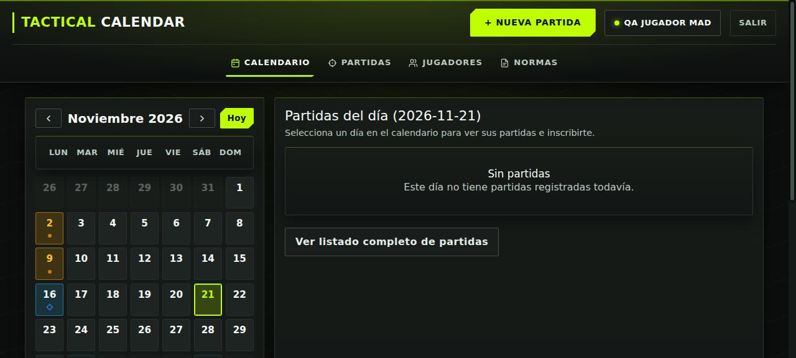
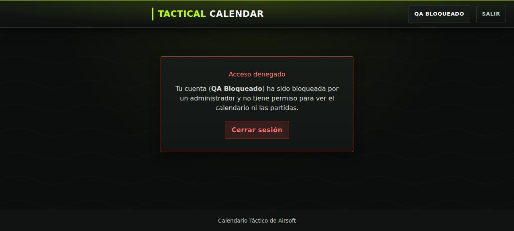
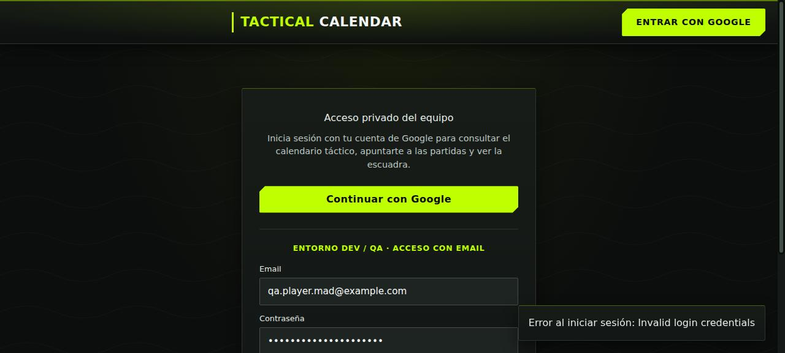
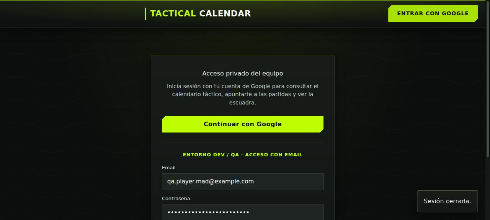
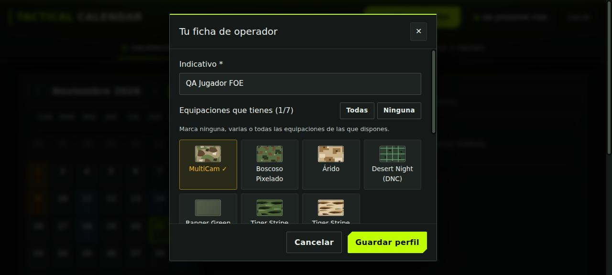
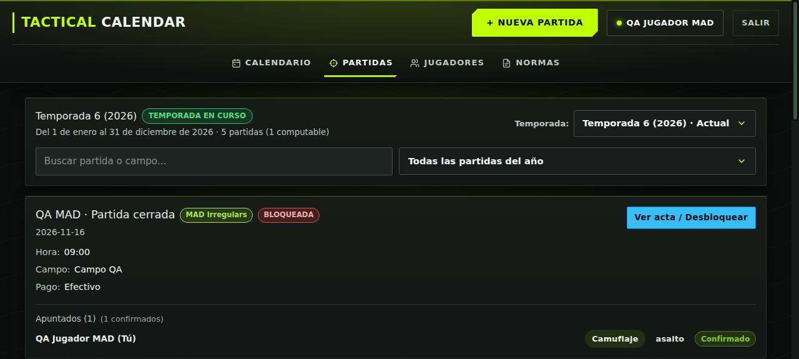
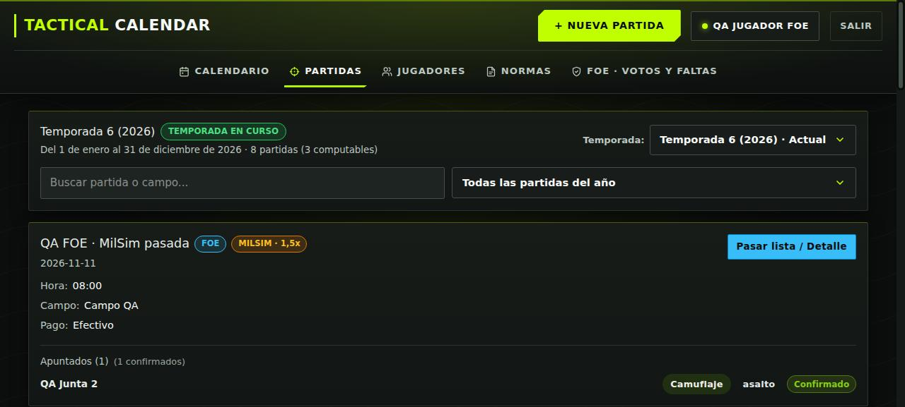
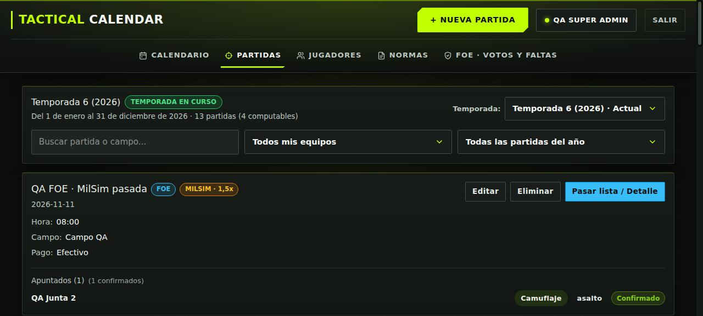
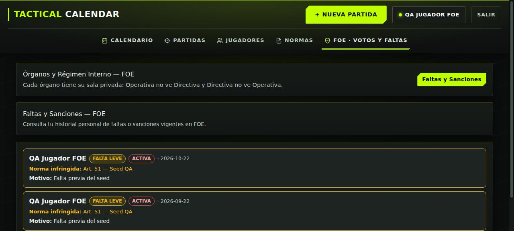
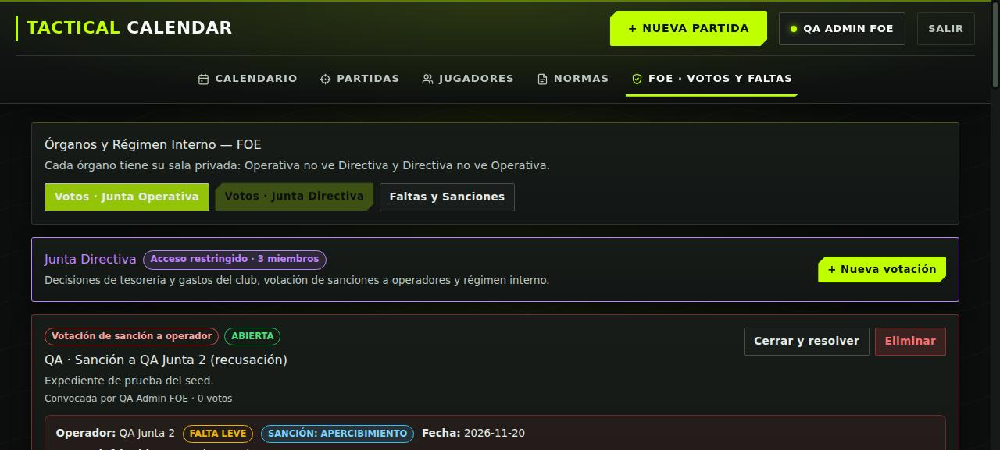

Informe de Selenium Java
Suite a-auth · tactical-calendar · 21/11/2026, 23:56:21 · 44.0 s
100%Tasa de éxito (13 de 13)
13Pasan
0Fallan
0Omitidos
| Pasa | TC-SMOKE La app carga y muestra el login QA Visitante Captura |
0.9 s |
| Pasa | TC-A01 Jugador con equipo entra y ve la navegación completa QA Jugador MAD Captura |
2.8 s |
| Pasa | TC-A01b Usuario sin equipo queda pendiente de asignación QA Sin Equipo Captura |
2.3 s |
| Pasa | TC-A02 Usuario bloqueado ve acceso denegado QA Bloqueado Captura |
1.7 s |
| Pasa | TC-A02b Usuario bloqueado no accede a ningún dato QA Bloqueado Captura |
1.7 s |
| Pasa | TC-A04 Contraseña incorrecta muestra error y no entra Visitante Captura |
1.5 s |
| Pasa | TC-A05 Cerrar sesión vuelve a la pantalla de login QA Jugador MAD Captura |
2.8 s |
| Pasa | TC-A03 Editar la ficha de operador guarda equipaciones y roles QA Jugador FOE Captura |
5.7 s |
| Pasa | TC-A06 Jugador MAD solo ve partidas MAD y no tiene pestaña FOE QA Jugador MAD Captura |
2.5 s |
| Pasa | TC-A07 Jugador FOE ve las partidas FOE y ninguna MAD QA Jugador FOE Captura |
2.8 s |
| Pasa | TC-A08 Super admin ve las partidas de ambos equipos QA Super Admin Captura |
2.8 s |
| Pasa | TC-A09 Jugador FOE sin cargo no ve la Junta Directiva QA Jugador FOE Captura |
2.7 s |
| Pasa | TC-A10 Miembro de la Junta Directiva ve su votación QA Admin FOE Captura |
2.7 s |